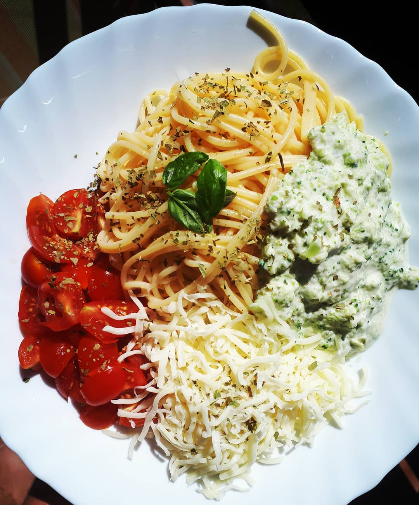

Brokolicová omáčka podľa @moniz_food — Normy Jedál
Brokolicová omáčka =brokolice rozmixovaná na zesklovatělou cibulku na pánev zalít 12%smetanou +sůl,pepř,česnek,bylinky povařit a podávat, semolinové špagety a nastrouhaná mozzarela, rajčátka
#brokolice #monizfood #mozzarela #tomato #rajcata #spaghetti #spagety #brokolicovaomacka #smetana #semolina #bezmasa #vegetarians #brocolli